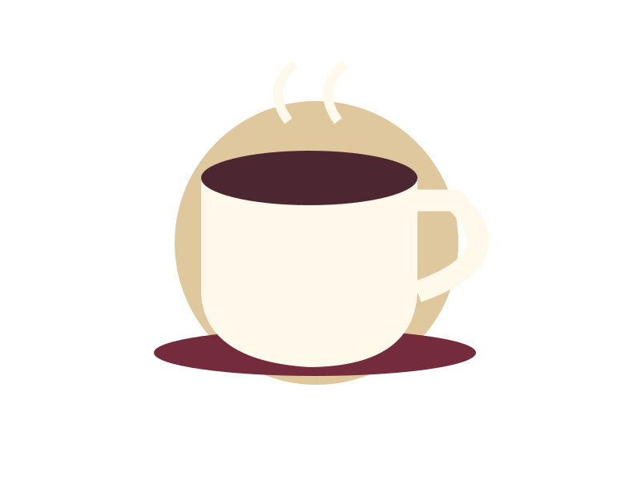

Bright & clear
A paper filter usually gives a lighter body. Begin with a medium grind and rinse the filter.
FilterA coffee notebook for the kitchen counter. Understand the ratio, adjust one thing and keep the recipe that suits your morning.

A paper filter usually gives a lighter body. Begin with a medium grind and rinse the filter.
FilterImmersion is forgiving. Stir, wait and separate the grounds completely when the brew is finished.
PressEspresso depends on grind, dose, yield and time together. Change one of them at a time.
Espresso